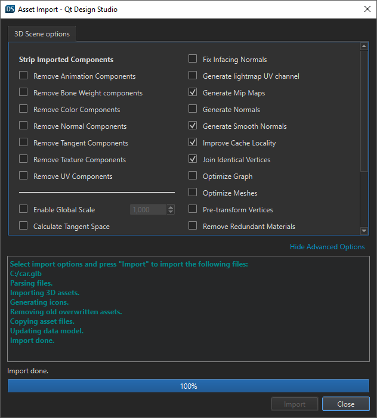

Importing 3D Assets
In Qt Design Studio, you can import 3D assets in formats such as .stl, .dae, .fbx, .glb, .gltf, .obj, .uia, and .uip. For a list of formats supported by each Qt Quick 3D version, see the module documentation.
During the import, you can optimize the files for Qt Design Studio. You can remove components from meshes to reduce the cache size, find and fix issues in the files, optimize graphs and meshes, and so on. The available options depend on whether you are importing files that you created with Qt 3D Studio or with other 3D graphics tools. See the tooltips in the options dialog for more information about a particular option.
For more information about exporting 3D graphics, see Exporting 3D Assets.

Importing a 3D Asset
To import a 3D asset to a Qt Design Studio project:
- Drag-and-drop an external file containing the 3D asset from, for example, File Explorer (on Windows), to the 3D view.
- In the 3D Scene Options tab, select options for importing the file.
Note: To see all options, select Show All Options.
- Select Import to import the 3D asset.
The 3D asset is now added to your scene, and you can see it in the 3D and Navigator views. It is also available in Components > My 3D Components.
Alternatively, you can initiate the import dialog from the Assets view:
- Select Assets >
 .
. - Select 3D Assets in the dropdown menu to filter 3D graphics files.
- Select a file to import, and then select Open.
- In the 3D Scene Options tab, select options for importing the file.
Note: To see all options, select Show All Options.
- Select Import to import the 3D asset.
The 3D asset now appears in Components > My 3D Components. You can add it to the scene by drag-and-dropping it to the 3D view.